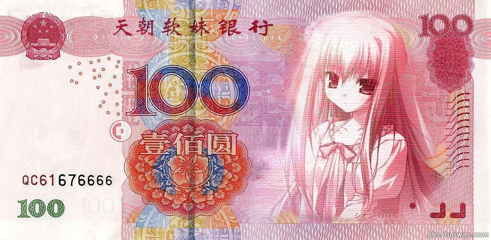
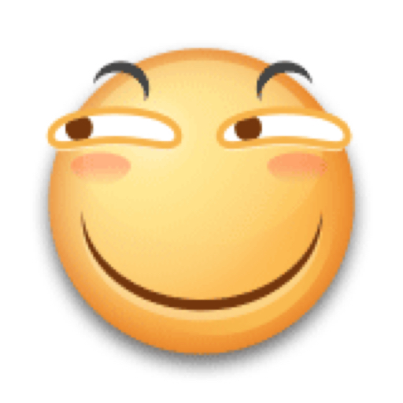

这是一个div标签
这是一个div标签
 锚链接:实现同一页面里边的跳转。给某个元素加标记(name属性)
问题
锚链接:实现同一页面里边的跳转。给某个元素加标记(name属性)
问题
问题
百度
target属性可以设置页面打开方式
_self:在当前页面打开(默认值)
_blank:在新的窗口打开


1>路径
绝对路径:在任何地方都可以访问的到，从根目录或者盘符触发，根据文件结构知道目录的地址。
www.sxuek.com
C:/desktop/WUIF1704/5-14/index.html
2>相对路径
相对当前文件或入口文件来说
1、当前文件和目标文件在同级目录下,可以直接查找。
2、当前文件在同级目录下的另外一个文件夹下，先跳出来才能查找
当前文件 D:/5-15/buju/index.html
目标文件 D:/5-15/imgs.img
3、目标文件在同级目录下的另外一个文件夹，先找到对应的文件夹，再找文件。
当前文件 D:/5-15/imgs.img
目标文件 D:/5-15/buju/index.html
CSS选择器
定义每一条样式的规则会作用页面中的某个元素，我们称这条样式规则为选择器。
1> 标签选择器(1)
用法:标签名{}
2>；类名选择器(10)
用法:.类名{}
注意：每个标签身上的类名可以有多个，中间用空格隔开
3>id选择器(100)
用法#id名{}
一、万维网
（三种表现形式）:超文本、超媒体、超文本传输协议
网站:网站是构成web的基础，所谓网站(Website),就是指在国际网路(万维网)上，根据一定的规则，使用HTML等工具制作的用于展示特定内容的相关网页的集合。
网页:网页是网站中的一 页 ，是构成网站的基础。网页是构成网站的基本元素，是承载各种网站应用的平台。通俗的说，网站就是有网页组成的。
网页组成：文字、图片、视频、音频等。
二丶制作网站的流程
**前端**
*美工设计(phtotshop)
*页面布局美化(html+css)
*创建动态的html页面，网站更加有动感、有魅力，吸引更多的浏者(Javascript)
**后台**
*后台程序的建设(php,app,jsp,.net)
*数据库建设(mysql...)
*服务器的选择
三、html(超文本标记语言)概念:是一种规范、标准，通过"标记符"来展示页面中的内容。
四、html主题结构
创建html主体:
1>html:4s+Tab
2>!+Tab
DOCTYPE:声明文档类型 不是标签
head:进行页面的诠释、定义的信息设置
编码格式:1>UTF-8
2>gb2312 专门处理汉字和非汉字
body:页面内容
五、html语法
1>标签
2>属性
3>元素
包括开始标签、结束标签以及他们之间的内容
六、注释标签
1、注释
2、停止代码的执行
七、CSS概念:层叠样式表，用来....
语法:
选中标签{
样式1;
样式2;
...
}
CSS选择器
定义的每一条样式规则会作用页面中的某个元素，
我们称这条样式规则为选择器。
1>标签选择器(1)
用法:标签名{}
2>类名选择器(10)
用法:.类名 可以有多个，用空格隔开
3>id选择器(100)
用法:#id名{}
4>通用选择器*(0)优先级最低
用法： *{}
5>后代选择器(优先级按情况累加)
用法：父类 子类{}
6>伪类选择器
用法: :hover 鼠标移入以后的变化
7>伪元素选择器
:before 在匹配元素的前面插入内容
:after 在匹配元素的后面插入内容
.box:before{
content:"";
display:block;
}
可以作为一个盒子存在;
可以引入文本;
可以引入图片,地址不能加引号
8>群组选择器(同时选中多个不同的元素)
用法:元素1，元素2,元素3{
}
9> div > p (属于父子关系)
选中匹配的父元素div下所有的子元素p
10> div + p (属于同辈)
选中紧跟在div元素后的p元素
11> div ~ p (属于同辈关系)
选中div之后所有同辈的p元素
八、 1>路径
绝对路径:在任何地方都可以访问的到，从根目录或者盘符触发，根据文件结构知道目录的地址。
www.sxuek.com
C:/desktop/WUIF1704/5-14/index.html
2>相对路径
相对当前文件或入口文件来说
1、当前文件和目标文件在同级目录下,可以直接查找。
2、当前文件在同级目录下的另外一个文件夹下，先跳出来才能查找
当前文件 D:/5-15/buju/index.html
目标文件 D:/5-15/imgs.img
3、目标文件在同级目录下的另外一个文件夹，先找到对应的文件夹，再找文件。
当前文件 D:/5-15/imgs.img
目标文件 D:/5-15/buju/index.html
5-16
一、元素分类
1、块元素div[display:block]
特点:从上到下排列;独占一行
2、行内元素 a[display:inline]
特点:从左到右依次横排;不能设置大小。
3、行内块元素 img[diplay:inline-block]
特点:从左到右依次横排;可以设置大小。
【注意:】
1>display:inline-block;元素之间会有默认的距离
2>float浮动可以改变元素的排列顺序
float:left;从左到右
float:ringht;从右到左
浮动可以让任何类型的元素具有行内块元素的特点
兼容问题
display:inline-block;之间有距离
font-size 为0px;解决
最好用float(浮动)
/* 边框 实线 */
/* margin外间距 padding 内间距 */
/* border有默认的8像素 margin. 清除默认样式 */
二、盒子模型有4部分组成
1、内容(content):也就是CSS中设置的width和height
2、内间距(padding)
3、边框(border)
4、外边距(margin)
三、盒子问题
1、元素在页面中所占的实际大小
宽=width+左右padding+左右border+左右margin
高=height+上下padding+上下border+上下margin
2、相邻的兄弟元素上下外边距会发生合并
3、margin可以设置负值,padding不可以设置负值
4、margin:0 auto;可以让块元素快速居中
任何一个元素加了浮动以后会脱离文档流
5、margin-top的bug问题
子元素身上的margin-top作用在父元素身上
条件:
1、子元素是父元素身上的第一个子元素
2、父元素身上没有浮动
3、子元素身上没有浮动
4、父元素没有margin-top或者padding-top
四、字体属性和文本属性可以从父元素继承
如果超过一个字要加""
字体属性:
font-size 字体大小
font-family 系列
font-style 风格
color 颜色
文本属性:
text-align 水平对其方式 比如居中
line-hight 垂直居中
5-17
一、定位(定位属性劫和left/right/tio/bottom进行定位)
1、相对定位 position:relative;
相对元素本身当前的位置进行定位。
2、绝对定位 posititon:absolute
相对的是有定位属性的父元素
如果父元素没有定位属性，它会一级一级网上找，直到找到html或者body
3、固定定位 position:fixed;
相对的是浏览器窗口
4、块元素居中:margin-0-auto;
任何一个元素垂直居中
position:absolute;
top:0;
bottom:0;
margin:auto;
任何一个元素水平居中
position:absolute;
left:0;
righet:0;
margin:auto;
border-bottom:10px solid #000;和上面一样;
5-19：
一、iconfont
1、引入CSS
2、修改路径
3、通过class或者unicode方式引入想要的iconfont
二、浮动的子元素撑不开父元素
每个页面的默认文档流顺序:从上到下，从左到右。
设置float,定位属性以后，元素会脱离文档流
每个元素默认的Z-index(堆叠顺序)为0[范围0~999]
只有定位属性的元素 z-index才起作用
浮动的子元素撑不开元素解决办法:
1、能设置宽高尽量设置宽高
2、给父元素加overflow:hidden;属性
3、给父元素添加一个子元素(且是最后一个子元素)
在子元素身上清除浮动产生的影响
clear:both;
父元素:after{
content:"";
diplay:bloack;
width:0;
height:0;
line-height:0;
clear:both;
}
4、text-align:justify;不起作用[并不是浮动引起的,是本身的问题]
1>子元素横排不能用float,需要转换display:inline-block;
2>解决办法
该元素:after{
content:"";
display:inline-block;
width:100%;
height:0;
line-height:0;
font-size:0;
}
opacity: 0; 透明度 0-1的取值范围
transition:all 0.8s esse 过渡时间 谁的属性在变给谁的去加
transform:rotate(360deg); 旋转度数
5-20：
CSS3属性
一、
一】2D转换 (transfrom)
1、旋转
transform(90deg);
2、平移
transform:ranslate(X,Y);
等同于
transorm:ranslateX(value);
transorm:ranslateY(value);
3、缩放
tranform:scale(value,value); 无单位
等同于
tranform:scaleX(value);
tranform:scaleY(value);
4、斜切
tranform:skew(45deg,45deg);
等同于
tranform:skewX(value);
tranform:skewy(value);
二】 3D转换(transform)
1、旋转
transform:rotate3d(90deg,90deg,90deg);
transform:rotateX(90deg);
transform:rotateY(90deg);
transform:rotateZ(90deg);
2、平移
transform:rotatee3d(X,Y,Z);
等同于
transform:rotateX(value);
transform:rotateY(value);
transform:rotateZ(value);
3、缩放
transform:scale(value,value);
等同于
transform:scaleX(value);
transform:scaleY(value);
3、建立3D场景的步骤
a>perspective:value; 设置景深
perspective-origin:top;
b>transform-style:preserve-3d;
设置内容以3d的方式展示
上 左 用-8px; 下右用 8px；
二、过渡(transition)
transition: all 0.8s linear; num1 属性 num2 时间 num3 效果
num1: 要过渡的属性的名称
num2:动画过渡执行的时间
num3:过渡效果
linear快速/ease 慢速/ease-in/ease out /ease-in-out
三、阴影(box-shadow)
box-shadow:x y blur value color;
（盒子的阴影，文字的换成text）
num1:在X轴上的位置
num2:在Y轴上的位置
num3:阴影模糊度
num4:大小
num5:颜色
四、圆角(border-radius)
border-radius:50%;
border-radius:40px;
分别设置4个角
border-radius:50% 圆角
border-top-left-radius:10px;
border-top-right-radius:30%;
border-bottom-left-radius:10px;
border-bottom-right-radius:80%;
角度大小 圆角
五、图片边框(border-image)
border-img-source 引入图片
border-img-width 图片宽度
border-img-slice 设置图像边界向内的偏移量 不加单位
border-img-outtset 设置图像边界向外的偏移量 不加单位 PX
border-img-repeat:repeat； 不用会拉升 icon 图标最好用ICONfont 其他最好用PNG格式的
六、倒影(box-reflect)
-weikit-box-reflect:方向(above/below/left/right)距离 形状(需要引入PNG格式的图片)/模糊度;
num1:above/below/left/right
num2:距离必须设置,如果距离为0就设置为0
num3:形状(必须是png的图片)
模糊度(通过渐变实现)
七、渐变(注意兼容问题)
线性渐变(linear-gradient)
径向渐变(radiadl-gradient)
简单的渐变 先写内核兼容 在写样式！
background:-webkit-radial-gradient(颜色编码,颜色编码);
background:-moz-radial-gradient(颜色编码,颜色编码);
background:-o-radial-gradient(颜色编码,颜色编码);
background:radial-gradient(颜色编码,颜色编码);
八、背景图片
background-image:url('';); 引入图片
背景图像的尺寸：
background-size:cover/contain/百分比/确定的值;
如何定位背景图像：
background-position:;
规定背景的绘制区域。
background-clip:padding-box-border-box/content-box;
background-orgin:padding-box/border-box/content-box; 定义图片的原点
九、动画(animation)
animation:名称 time 动画方式 [延迟时间(可以不设置)]
infinite(持续执行) forwards(停留在最后的状态)
十、定义帧动画(@keyframes)
@keyframes{
10%{}
20%{}
100%{}
}
@keyframes{
form{},
to{}
}
十一、文本属性
text-align
line-height
溢出文本处理
overflow:hidden;
white-space:no wrap;(文本换行处理)
text-overflow:ellipsis(省略号)/clip(裁剪);
-webkit-text-fill-colol:;(文本填充色)
-webkit-text-stroke-colol:;(文本描边色)
-webkit-text-stroke-width:;(文本描边大小)
text-shadow: x y blur color;
文本阴影 水平 垂直 模糊的距离 颜色
十二、用户界面
column-count:;(定义列数)
column-rule:1px solid #000;(定义每列间隔样式)
column-width:;(定义每列最小宽度)
column-fill:;(定义是否平衡每列高度)
5.24
一、flex布局
flex布局就是“弹性布局”,为我们的盒模型布局提供最大的灵活性
二、页面中任何一个元素都可以指定为'容器'，那么容器里边的子
元素自然而然称为容器的成员。我们称它为'项目'
三、凡是定义了弹性布局，元素身上的float、clear、vertival-algin
等的属性都将失效
四、如何定义弹性布局
1、display:flex;
2、如果是webkit内核的浏览器
display:-webkit-flex;
3、行元素:
display:inline-flex;
在弹性布局里面,存在两根轴, 水平方向的主轴和垂直方向的交叉轴.
五、容器身上的属性
1、设置项目的排列顺序(flex-direction)
flex-direction:row; 默认的值。左-右
flex-direction:row-reverse; 右-左
flex-direction:column; 上-下
flex-direction:column; 下-上
2、设置项目是否换行(flex-wrap)
flex-wrap:nowwrap; 默认的值,不换行
flex-wrap:wrap; 换行
flex-wrap:wrap-reverse; 将第一行放在最后,倒着换行显示
flex-flow:flex-direction flex-wrap;
3、设置项目在主轴上的对齐方式(justify-content)
justify-content:flex-start; 默认值。根据主轴开始位置对齐
justify-contentflex-end; 根据主轴结束位置对齐
justify-content:center; 根据主轴中心点位置对齐
justify-content:space-around; 等间距对齐
justify-content:space-between; 两端对齐
4、单轴(只有一行项目)交叉轴对齐方式(align-items)
align-items:flex-start;
默认值。根据交叉轴的起始位置对齐
align-items:flex-end;
根据 交叉轴的结束位置对齐
align-items:center;
根据交叉轴的中心点位置对齐
align-items:baseline;
根据交叉轴的一行文字的基线对齐
align-items:stretch;
默认沾满整个容器。(当元素高度为auto或者不设置的时候)
5、多轴(有多行项目)交叉对齐方式(align-content)
它对单轴不起作用
align-content:flex-start; 默认值。根据交叉轴的起始位置对齐
align-content:flex-end; 根据交叉轴的结束点位置对齐
align-content:center; 根据交叉轴的中心点位置对齐
align-content:space-around; 等间距对齐
align-content:space-between; 两端对齐
align-content:stretch; 默认占满整个容器 还有在
height不设置或者是auto的时候才会生效
六、项目身上的属性
1、order
将项目根据设置的值进行分组,值越小,越靠前
默认的值是0
2、flex-grow:0;
定义项目放大倍数。默认值是0,也就是说即使存在剩余空间,也不会放大
3、flex-shrink:1;
定义项目缩小倍数。默认值是1,也就是没有剩余空间的时候,项目会等比例缩小。
不支持负值
4、项目自己本身的对齐方式(aligin-slef)
可以覆盖align-cotent的值
aligin-self:flex-statt:flex-start;
aligin-slef:flex-end;
aligin-slef:center;
aligin-slef:baseline;
aligin-slef:stretch;
aligin-slef:auto;
table 表格
thead 表格标题
tbody 表格内容
tfoot 表格结尾